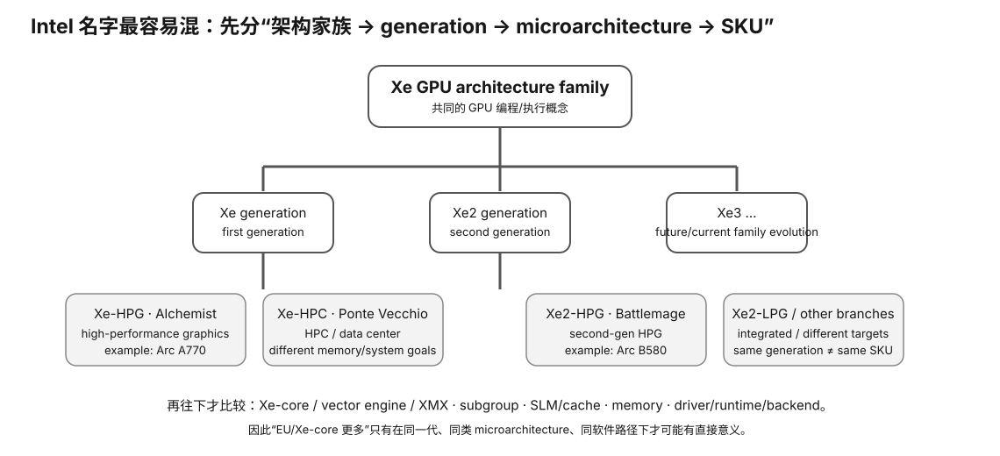

Intel Xe · 2/2 · L0→L2
Intel Xe（二）：Arc / oneAPI / Level Zero / SYCL 与本地 LLM
Intel Arc 的学习价值在于它把“硬件看起来有潜力”与“软件生态能否兑现”这个问题暴露得很清楚。本节不做厂商站队，而是教你如何验证一条从驱动到 LLM kernel 的真实可用链。

Prerequisite Check
你应知道 Xe-core/XMX/subgroup 只是硬件能力，必须通过 runtime/library/backend 才能变成应用性能。
真实问题：为什么同一张 Arc 卡，有人能跑很快，有人却连 GPU offload 都没成功？
因为“支持 Intel GPU”可能指完全不同的路径：SYCL、Level Zero、OpenCL、Vulkan、DirectML、特定框架插件等；操作系统、driver 版本和 build option 也会改变结果。
1. 把 Intel 软件栈画成层
LLM application
(llama.cpp / framework / server)
↓
application backend
(SYCL / Vulkan / other)
↓
libraries / runtime
(oneAPI components, Level Zero, etc.)
↓
GPU driver
↓
exact Arc / Xe device排错必须从底向上或从上向下逐层证明，不能用“系统能显示显卡名称”跳过中间层。
2. oneAPI 是什么？
oneAPI 是 Intel 推动的异构开发工具/库生态，目标是让 CPU/GPU/accelerator 等设备能通过统一工具链和开放/标准化接口开发。对本课程，你不需要掌握全部组件，只要区分：
- 编程模型：如 SYCL；
- 底层设备接口：如 Level Zero；
- 数学/AI libraries：提供优化 primitives；
- 应用 backend：最终把 LLM operator 映射到这些能力。
3. SYCL：可移植源码 ≠ 各厂商性能自动相同
SYCL 让 C++ 程序表达异构 kernel 和 device selection，但不同实现、GPU feature、subgroup、memory model 与 library 优化都会影响表现。
4. Level Zero：为什么底层 runtime identity 要记录？
底层 runtime 决定设备枚举、memory allocation、command submission 等。真实 benchmark 若不记录 driver/runtime build，很难解释未来升级后为什么性能、兼容性或 bug 行为变化。
这也是课程 Intelligence lane 要求把 hardware/runtime/build identity 与 benchmark 绑定的原因。
5. Arc 本地 LLM 的三条候选路径
具体可用路径会随软件版本变化，因此稳定教材不写“今天唯一正确 backend”，而教你验证：
- Native Intel-oriented path：应用的 SYCL/oneAPI 等 backend；
- Cross-vendor path：Vulkan 等图形/compute API backend；
- Framework-specific path：某 ML framework/extension 对 Intel GPU 的集成。
同一模型可以在不同路径得到不同 kernel coverage 和性能，所以任何 benchmark 必须记录 backend。
Worked Example：Arc A770 16 GB 类候选为什么不能用“16 GB 很便宜”直接下单？
先建立 acceptance ladder：
- Fit：16 GB 是否能放下目标模型+KV+buffer？
- Enumerate：driver/runtime 能否稳定看到 exact device？
- Offload：LLM 应用是否确认 layers/ops 在 GPU 上运行？
- Kernel：目标 quant 是否走高效 GPU/XMX 路径？
- Measure：固定 prompt/protocol 测 PP/TG/quality。
- System：power、ReBAR/PCIe、主板、散热是否合理？
- Cost：价格优势是否足以覆盖生态/转售/排错时间？
任何一步失败，都不能用后面的纸面优势越过。
6. ReBAR / host mapping 为什么可能影响离散 GPU？
Resizable BAR 允许 CPU 映射更大的 GPU address window。某些现代 GPU/driver/workload 会受 host-to-device mapping 和平台配置影响。对 LLM 不要先假设“开了就快 X%”，但在设备/驱动文档要求时，应把 BIOS/platform 设置纳入可重复环境记录。
7. XMX 的实际使用如何验证？
三层证据：
- Static：硬件和 library 文档说明支持某 numeric path；
- Dispatch：应用日志/profiler 表明目标 kernel 被调用；
- Measured：与控制变量 baseline 的性能变化一致。
只有第一层时，仍然只是“可能可用”。
Why it matters
- Arc 常以容量/价格吸引“垃圾佬”，最需要严谨 software gate。
- oneAPI/SYCL 学习帮助你理解跨厂商 portability 的真实边界。
- 记录 driver/runtime/backend 能让 benchmark 在未来可解释。
- 让你不会把“能启动模型”误当“高效 GPU inference”。
常见误区
- “oneAPI 支持 GPU，所以任意 Arc/任意程序都支持”——需要 exact device + component + app backend。
- “Vulkan 能跑就等于 SYCL 性能”——不同 backend/kernel。
- “GPU utilization 有数值就代表主要计算在 GPU”——还要检查 offload/kernel/CPU bottleneck。
- “便宜 16 GB 自动赢 12 GB NVIDIA”——fit 只是第一 gate。
- “驱动更新只会变好”——兼容性与性能可能回归，需可回滚记录。
小实验与预期观察
做一个 Intel support preflight，不要求 Arc：为一个目标 LLM runtime 查出安装路径、支持 backend、要求的 driver/runtime、如何枚举 device、如何从日志确认 offload。把“unknown”保留，不猜。
有 Arc 时再依顺序执行 enum → tiny model → target quant → controlled benchmark。预期你能明确失败发生在哪一层，而不是只得到“Intel 不行/Intel 真香”的情绪结论。
无硬件路径
L0 使用 oneAPI/SYCL/目标 runtime 文档完成 compatibility dossier。真实 token/s 后续再测。
排错决策树
OS sees GPU?
├─ no → hardware/driver/platform
└─ yes
runtime enumerates?
├─ no → runtime/device support
└─ yes
app backend built/enabled?
├─ no → build/config
└─ yes
model offloaded?
├─ no → format/kernel/config
└─ yes → benchmark/profiling
Retrieval Practice
- 画出 Arc 从硬件到 LLM 应用的五层软件链。
- 为什么 SYCL 的 source portability 不保证 performance portability？
- 如何证明目标应用真的使用 XMX，而不是只证明硬件有 XMX？
- Arc 16 GB 的容量优势通过了哪个 gate？还剩哪些？
- 为什么 driver/runtime/backend identity 必须进入 benchmark manifest？
- 如果 Vulkan 可用、SYCL 不可用，你应该得出什么精确结论？
Decision Rule
对 Arc/Intel GPU，不做厂商级结论。以 exact device × exact runtime/backend × exact model/quant 建证据。只有真实 offload 和受控 benchmark 通过后，容量/价格优势才算可兑现。
Transfer
把同一支持链迁移到 AMD ROCm、NVIDIA CUDA、Apple Metal。生态成熟度的本质不是品牌印象，而是你目标 workload 的“设备→驱动→runtime→kernel→应用”链有多完整、多稳定。
完成证据
完成本课后，保留一份 learner-owned completion artifact，至少包含：
- 用自己的话画出或写出本节最小 mental model，并标出关键变量/资源层；
- 完成本节小实验、worksheet 或无硬件 fallback；有真机时链接 raw Evidence，没有真机时明确标 L0 / DOCUMENTED / DEFERRED-HARDWARE；
- 写一条绑定 Evidence 的 PASS / FAIL / UNKNOWN / BLOCKED 结论，说明它怎样影响本地 LLM 的容量、性能、兼容、成本或风险判断；
- 写一句明确 non-claim：这份证据还不能证明什么。
只写“看完了”或抄规格表不算完成。课程要的是可复查的推理产物，而不是阅读打卡。